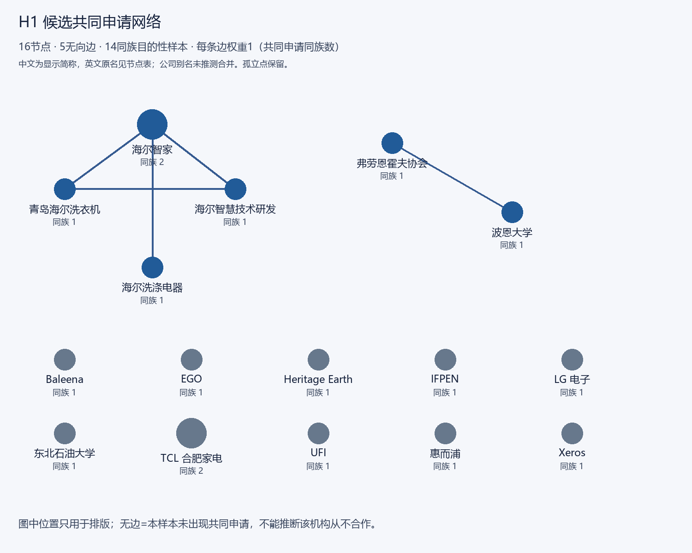
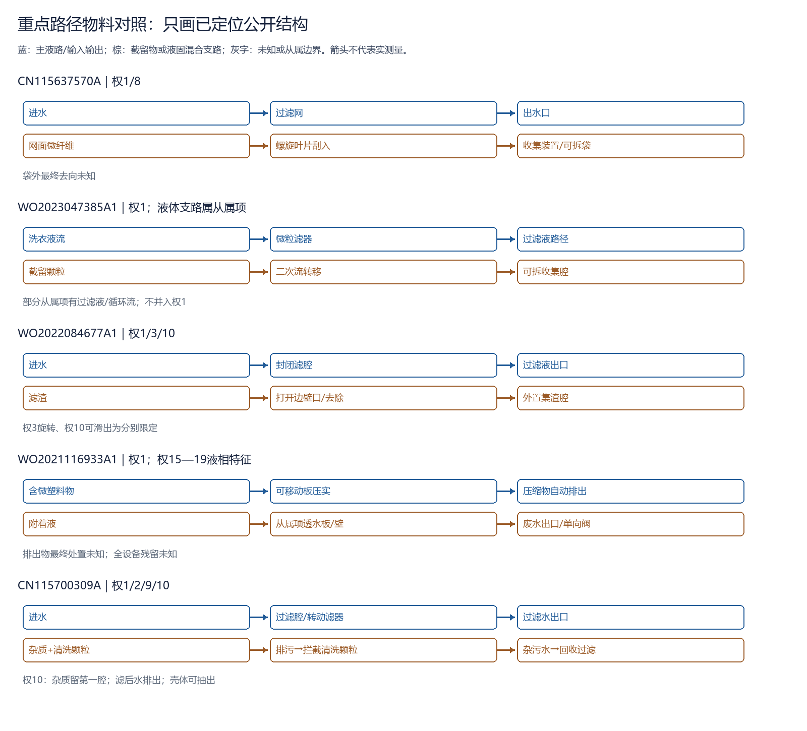

数据为16公开文本、14同族目的性候选；不是全库母集。人工功能编码，不是LDA/BERTopic主题模型。技术公开≠实测性能。
未知表示本轮定位不能判定；不是“不存在”、技术空白或专利机会。残留与最终处置的未知也不等于没有披露。
| 公开文本 / 定位 | 过滤 | 再生/清理 | 转移 | 液相出口 | 固体移出 | 残留 | 最终去向 |
|---|---|---|---|---|---|---|---|
| CN112914464A 同族 72658993 权1、7—8、22—28 | 过滤物接收器 | 未知：当前定位不能判定 | 进入接收器 | 未知：当前定位不能判定 | 闭合结构单元可移除/替换 | 未知：当前定位不能判定 | 说明书/从属项处置设想，非实证 |
| CN115087774A 同族 69171968 同族WO2021116933A1权1、15—19、24；CN对应权1 | 透水板/壁为从属特征 | 板压实，非等同滤网再生 | 移动板推向出口 | 从属项废水出口/单向阀 | 自动排出压缩物 | 未知：当前定位不能判定 | 未知：当前定位不能判定 |
| CN115298383A 同族 70804819 权1—4、14、17、19 | 颗粒介质渗滤 | 流化再生 | 再生后下游膜/旋流收集（权19） | 过滤流出液；旁路为从属项 | 仅收集定位，人工移出未知 | 未知：当前定位不能判定 | 未知：当前定位不能判定 |
| CN115637570A 同族 84940183 权1、6、8 | 过滤网 | 螺旋叶片刮网 | 刮入收集装置 | 出水口 | 可拆过滤袋（权8），具体倒出未知 | 未知：当前定位不能判定 | 未知：当前定位不能判定 |
| CN115700309A 同族 85120837 权1—2、9—10 | 转动过滤机构 | 清洗颗粒摩擦碰撞 | 排污→颗粒拦截→回收装置 | 权2带杂污水出口；权10清水出口 | 权10壳体可抽出 | 未知：当前定位不能判定 | 未知：当前定位不能判定 |
| CN116282270A 同族 86813332 方法权1；组件权2—4；原PDF物理页2 | 过滤网 | 机械传动低压反冲洗 | 旋流底流收集 | 旋流溢流/底流分列 | 分体螺纹从属特征，取出量未知 | 未知：当前定位不能判定 | 未知：当前定位不能判定 |
| CN117702432A 同族 90159083 权1—4 | 多腔过滤网 | 阀切换不是自动再生证据 | 腔室进出水切换，残渣转移未知 | 进水/出水口 | 可拆盖体不等于固体移出验证 | 未知：当前定位不能判定 | 未知：当前定位不能判定 |
| CN118273060A 同族 91644784 权1—6 | 脏/清区与过滤介质 | 未知：当前定位不能判定 | 未知：当前定位不能判定 | 入口口部/出口口部 | 止动件解锁时，盖装置和过滤器组可从壳体主体轴向移出/装入（权16）；独立集渣移出未知 | 未知：当前定位不能判定 | 未知：当前定位不能判定 |
| CN120500565A 同族 91718058 权1—3、6、8—11 | 双腔过滤装置 | 侧壁水流剥离 | 底部积聚 | 腔连通开口；对外出口待定位 | 可拆滤器/抽屉 | 未知：当前定位不能判定 | 未知：当前定位不能判定 |
| CN222043626U 同族 93508213 权1—4 | 收集盒内过滤网 | 未知：当前定位不能判定 | 拦截在收集盒内 | 盒体与壳体对应出水口 | 收集盒可拆，实际移出未知 | 未知：当前定位不能判定 | 未知：当前定位不能判定 |
| WO2022084677A1 同族 78536409 权1—3、10 | 滤腔内过滤介质 | 去除装置；权3旋转甩除 | 开闭边壁口→外置集渣腔 | 权1过滤液出口 | 权10可滑出部分 | 可排出滤腔内液体以降低滤渣含水量；滤腔排空/滤渣非流动或已脱水时可移除（权27—30）；残余液量未知 | 未知：当前定位不能判定 |
| WO2023047385A1 同族 85720193 权1、12—14、17、19—21 | 微粒滤器 | 移走颗粒，水力恢复未知 | 二次流→可拆收集腔 | 部分从属项过滤液/循环流 | 收集腔可拆 | 未知：当前定位不能判定 | 未知：当前定位不能判定 |
| WO2024199585A1 同族 90826597 原PDF物理页26—27权1/8；页14—15说明书 | 仿生滤元件 | 控制机构调节微塑料排出或回流，以清洗滤元（权9；方法权14）；清洁周期/时长未知 | Retentat出口导出/抽吸 | 说明书离心/压机去附着液 | 权1/8容器收集并取出 | 残余液去除披露；全设备残留未知 | 未知：当前定位不能判定 |
| WO2024250011A1 同族 91737942 权1—3、17—22 | 可拆多孔/多级/褶皱滤芯 | 说明书[0051]：离心力和未具体限定的脉冲将褶皱滤面所捕集微纤维击落；未入权项 | 说明书[0051]：微纤维移至单独储存腔；未入权项 | 水通过壳体开孔；独立出口未知 | 可拆滤芯，目标物独立取出未知 | 未知：当前定位不能判定 | 未知：当前定位不能判定 |

边表原同族证据与英文身份见Gephi节点/边CSV。孤立点、样本边界与企业名差异保留。

各行是定位摘取的结构路径，独立/从属边界保留；不是全部流路重建，也不是物料平衡实测图。